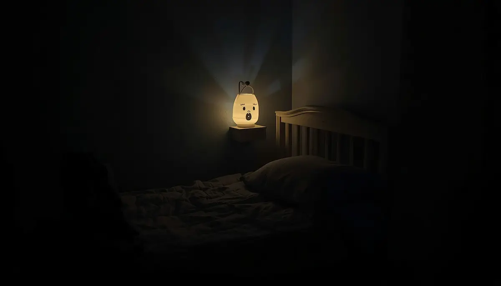

Controlar el picor y proteger el descanso
Uno de los mayores desafíos a los que se enfrentan las familias con dermatitis atópica es el persistente picor nocturno. El prurito suele intensificarse al caer la tarde y durante las horas de sueño, desencadenando un círculo vicioso de rascado involuntario que daña la piel y rompe el descanso del niño y de sus padres. Frenar este impulso mediante estrategias calmantes es vital para recuperar la tranquilidad en el hogar.
Romper el círculo vicioso del picor y el rascado
Cuando la piel atópica pica, el reflejo del rascado libera sustancias inflamatorias que aumentan aún más la sensación de picazón, agravando la lesión cutánea. Para interrumpir esta cadena, es de gran ayuda mantener las uñas del menor siempre cortas y limadas, utilizar pijamas de algodón transpirable sin costuras rugosas y aplicar compresas frescas o paños húmedos sobre las zonas irritadas antes de recurrir a los emolientes calmantes.
"El descanso nocturno es un pilar sagrado para el desarrollo del niño; calmar el picor antes de dormir garantiza noches serenas y una piel protegida."
Estrategias prácticas para favorecer un sueño reparador
Adaptar la rutina previa al descanso nocturno ayuda a relajar el sistema nervioso del menor y a minimizar las molestias cutáneas:
1. Mantener el dormitorio fresco y ventilado: Evitar exceso de calefacción o ropa de cama muy pesada que provoque sudoración nocturna, ya que el calor es un potente activador del picor.
2. Aplicar emoliente frío antes de dormir: Guardar la crema hidratante en el frigorífico aporta un alivio descongestionante inmediato sobre la piel caliente al terminar el día.
Proteger el bienestar nocturno con constancia
Acompañar al niño con paciencia durante los episodios de picor nocturno fortalece su seguridad emocional. Con un dormitorio fresco, pautas físicas protectoras y una hidratación adecuada, el descanso vuelve a ser una fuente de energía y salud para toda la familia.
➔ Volver al índice de Dermatitis atópica